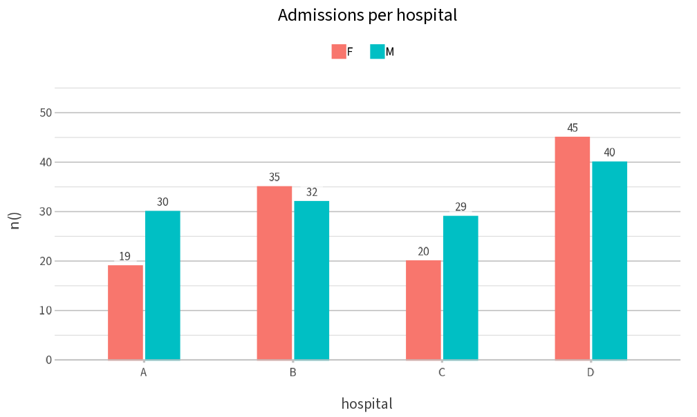
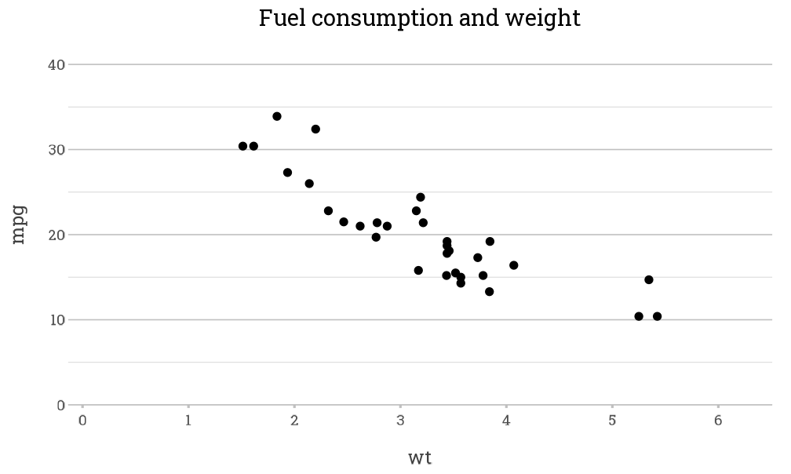

plot2() can use any font that is installed on the
system, and any of the fonts of Google Fonts. Fonts other than the
default font of the graphics device require the packages
showtext, showtextdb and
sysfonts:
install.packages(c("showtext", "showtextdb", "sysfonts"))Setting a font
The font argument sets the font of all text in the plot.
A Google Font that is not installed is downloaded once, the first time
it is used:
admitted_patients |>
plot2(x = hospital,
y = n(),
category = gender,
font = "Source Sans 3",
title = "Admissions per hospital")
#> Downloaded font https://fonts.google.com/specimen/Source+Sans+3 from Google Fonts into /tmp/Rtmp54le09/R/plot2/fonts
The font is used only while the plot is drawn, so other plots in the session are not affected.
Downloaded fonts
Downloaded fonts are stored in the user cache folder of
plot2, which
tools::R_user_dir("plot2", "cache") returns. Fonts that
have not been used for 90 days are removed from this folder
automatically, so it does not grow over time.
The same font for all plots
The option plot2.font sets the font for all plots in the
session. Together with plot2.text_factor, which scales all
text, this gives a consistent style, for example for a report:
options(plot2.font = "Roboto Slab", plot2.text_factor = 1.1)
mtcars |>
plot2(x = wt, y = mpg, title = "Fuel consumption and weight")
#> Using type = "point" since both axes are numeric
#> Downloaded font https://fonts.google.com/specimen/Roboto+Slab from Google Fonts into /tmp/Rtmp54le09/R/plot2/fonts
options(plot2.font = NULL, plot2.text_factor = NULL)R Markdown and Quarto
In R Markdown and Quarto, showtext must render the text
of the plot. Set the chunk option fig.showtext = TRUE (R
Markdown) or fig-showtext: true (Quarto) in every chunk
that uses another font, or once for the whole document:
knitr::opts_chunk$set(fig.showtext = TRUE)Without this option, plot2() stops with an error that
explains how to set it.